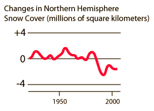

|  | The graph of snow-cover area is sketched from data in Collins, et al. The images of snow-cover above are NASA images from http://earthobservatory.nasa.gov . They were derived using data from the Moderate Resolution Imaging Spectroradiometer (MODIS), flying aboard NASAÕs Terra satellite. The two maps represent maximum snow cover in North America during the same 8-day period in 2001 and 2004. . |